Благородный берилл
Благородный берилл получил свое
название от греческого «berillos»,
первоначальное значение этого слова неизвестно.
В древности из бесцветных бериллов делали
оптические стекла, отсюда и немецкое Brille –
очки. Общие свойства всех разновидностей берилла
– это устойчивость по отношению к различным
реагентам (за исключением плавиковой кислоты),
хрупкость – при сдавливании бериллы легко
трескаются, и яркий стеклянный блеск. Берилл –
камень семейного очага, охраняющий его покой и
счастье. Древние считали берилл также и женским
камнем – с его помощью лечились женские болезни.
Разновидности берилла по цвету имеют различные
торговые наименования, которые приведены ниже.
Химическая формула берилла: Al2[Be3(Si6O18)]
- бериллосиликат алюминия.
Изумруд.
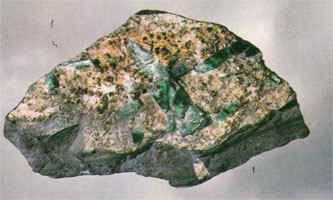 |
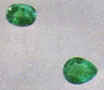 |
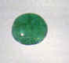 |
Ему присущ ни с чем не сравнимый
изумрудно-зеленый цвет. Название происходит от
искаженных латинского «esmeraude» и греческого «smaragdos».
Первоначально оно означало просто «зеленый
камень» и относилось к самым разным зеленым
драгоценным камням. Окраска изумруда
обусловлена присутствием в его составе ионов
хрома и иногда ванадия, она способна
противостоять солнечному свету и нагреванию,
изменяясь лишь при температуре 700o - 800o
С. Прозрачны только изумруды наивысшего
качества, но чаще они замутнены включениями
пузырьков жидкости или газа, других минералов,
залеченными трещинками. Мелкие включения не
считаются серьезным дефектом, свидетельствуя о
природном происхождении камня.
Дабы предотвратить скалывание ограненных
изумрудов, для них была создана специальная
раз¬новидность ступенчатой огранки, в которой
все четыре угла камня притупляются фасетками,
так называемая «изумрудная огранка».Прозрачные
камни ограняют бриллиантовой огранкой, а мутные
обрабатывают в форме кабошона, или из них
вытачивают шарики для бус. Иногда на крупных
камнях делают гравировку.
Наиболее значительные месторождения изумрудов
находятся в Колумбии. Важнейший рудник -
"Мусо" расположен в 100 км. к северо-западу от
Боготы. Изумруды добывались здесь еще инками.
Другой важный рудник - "Чивор", к северу от
Боготы. Для огранки пригодна лишь треть
найденных здесь изумрудов. Прозрачные камни
высокого качества редки, обычно встречаются
камни размером с орех, трещиноватые и
переполненные включениями.
В Бразилии большинство месторождений находится
в штатах Баия, Гояс и Минас-Жерайс. Их
промышленное значение невелико. Бразильские
изумруды светлее колумбийских, преимущественно
желтовато-зеленые, зато гораздо чище.
Месторождения изумрудов есть и на Урале, но лишь
немногие изумруды этого месторождения имеют
высокое качество. В большинстве своем они
переполнены включениями слюды и непрозрачны.
Более мелкие месторождения изумрудов имеются
также в Замбии, Танзани, Индии, Пакистане,
Австралии и США.
Первый успешный синтез изумруда был произведен в
1848 году во Франции. В 50-е годы 20-го столетия были
получены синтетические изумруды требуемого
качества. Тем не менее, их безошибочно отличают
от природных камней в ультрафиолетовом свете:
синтетические изумруды прозрачны для
коротковолновых ультрафиолетовых лучей.
Cпутать изумруд можно с демантоидом, диопсидом,
диоптазом, гроссуляром, гидденитом, перидотом
(хризолитом), зеленым турмалином, уваровитом.
В золотой оправе изумруд охраняет владельца от
чумы, чар любви и бессонницы.
В древности изумруд считался сильным талисманом,
улучшающим зрение, при этом он использовался от
укусов ядовитых змей, защищал от насекомых,
выступал символом красоты и природы, являлся
средством от кошмарных снов, амулетом храбрости,
устранял беды, был лекарством от припадков и злых
духов.
Теперь конкретизируя. Для укрепления зрения
изумруд надо носить на шее или растирать,
смешивать с шафраном и прикладывать к глазам
вроде компресса. А вредоносные насекомые не
могут приблизиться к человеку, носящему изумруд
на шее или на пальце.
А вот еще полезные свойства изумруда:
Древние русичи считали, что изумруд излечивает
болезни печени, желудка, кашель, туберкулез и
дизентерию (почему во время войны солдаты не
носят изумрудов?..), также они полагали изумруд
камнем мудрости, хладнокровия и надежды.
Еще изумруд считают талисманом матерей и
мореплавателей. А если камень долго
разглядывать, то в нем, как в зеркале, можно
увидеть все тайное и обнаружить будущее (видимо,
для этого он должен быть очень большим, хотя бы с
горошину, или надо обладать очень хорошим
зрением...) Сны человека, носящего изумруд, очень
часто сбываются. Этому камню приписывают связь с
подсознанием, способность превращать сны в явь,
проникать в тайные мысли.
Юношей и девушек он ограждает от разврата.
Особые охраняющие свойства изумруда – это
борьба с лживостью и неверностью своего
владельца. Если пороки человека очень сильны,
камень может расколоться.
Также изумруд способен рассеивать меланхолию,
улучшает настроение, прогоняет тоску, действует
положительно на нервную систему. Дух камня
расширяет сознание, он – помощник при
медитациях.
Изумруд относится к разряду камней, передаваемых
по наследству. Действовать он начинает не сразу,
сначала он должен привыкнуть к новому владельцу.
Изумруды в истории и литературе.
Среди драгоценностей Венской сокровищницы
выделяется изумрудный флакон для ароматических
снадобий высотой 12 см и массой 2205 кар, выточенный
из цельного кристалла изумруда. Нечто похожее
было у графа Монте-Кристо в романе Александра
Дюма. Один из известных в мире изумрудов -
"Девонширский изумруд" (хотя он имеет
южноамериканское происхождение), подаренный
герцогу Девонширскому в 1831 году бывшим
императором Бразилии. Добыт в копях "Мусо".
Самый большой в мире кристалл изумруда был
найден в 1969 году на руднике "Крус" недалеко
от Колумбии. Самый дорогой в мире изумруд был
продан за 2 126 600 долларов. Его масса 19,77 карата, он
вставлен в кольцо, сделанное лондонской фирмой
"Картье" в 1958 году. Папе Клименту V,
увлекавшемуся алхимией, его же собственные
лекари в качестве лекарства посоветовали
толченые изумруды, отчего он благополучно и
скончался. У Куприна беговую лошадь звали
Изумрудом. Некоторая часть Изумрудного города из
"Волшебника Изумрудного города" была
сделана из изумруда (на этом мои знания и
фантазия иссякают :) ).
Аквамарин.
| 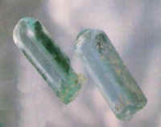 | 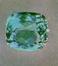 |
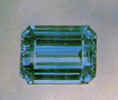 | 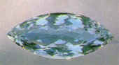 |
Кристаллы аквамарина |
Ограненные аквамарины |
||
Cвое название аквамарин получил за окраску
(обусловленную примесью железа): от латинского "aqua
marina" – морская вода. Наиболее ценятся камни
глубокого небесно-голубого цвета. Интенсивность
окраски возрастает после нагревания выше 400o
С. Окраска обычно распределена равномерно и
аквамарины гораздо чаще, чем изумруды, бывают
прозрачны. Характерны тончайшие полые канальцы,
вызывающие серебристо-белые световые эффекты.
Самый крупный найденный кристалл аквамарина
имеет массу 110,5 кг. Из него было огранено
множество камней. Несколько находили кристаллы
массой в несколько тонн, но они оказывались
мутными и непрозрачными – непригодными к
огранке.
Месторождения аквамарина известны почти на всех
континентах; наиболее значительные из них
находятся в Бразилии (шт. Минас-Жерайс, Баия,
Эспириту-Санту), на Мадагаскаре и в России (Урал,
Забайкалье). Более мелкие месторождения, имеющие,
как правило, только местное значение, известны в
Австралии (Новый Южный Уэльс), Бирме, Шри-Ланке,
Индии, Кении, ЮАР, Намибии, Мозамбике, Танзани, США
(шт. Колорадо, Коннектикут, Калифорния, Мэн,
Северная Каролина).
Спутать аквамарин можно с эвклазом, кианитом,
голубым топазом, турмалином, "старлитом"
(обожженным цирконом). Синтетические аквамарины
не изготавливают – это возможно, но экономически
нецелесообразно. Имеющиеся в продаже
«искусственные аквамарины» на самом деле
являются синтетической шпинелью или корундом
аквамаринового цвета.
Аквамарин – амулет спокойствия, внимания и
терпения. Он охлаждает страсть, успокаивает
погоду (будь то простой дождик или ураган),
добавляет людям рассудительности, дает
способность постигать тайны, сокрытые в самых
обыденных на первый взгляд вещах (для этого
терпение и внимание ой как необходимы), укрепляет
дух, разоблачает ложь (в первую очередь – ложь
своего хозяина), он дает способность человеку
направлять энергию примитивных желаний в
созидательное русло. Еще аквамарин помогает
правильно оценивать свое положение в жизни,
разбираться в себе и делать выводы относительно
дальнейших планов.
Этот камень издавна считался амулетом моряков.
Биксбит.
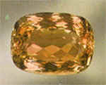 Крыжовенно-розовый берилл. Это
название употребляется редко, и его не относят к
самостоятельным разновидностям.
Золотистый берилл
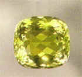 Oт лимонно- до
золотисто-желтого цвета. Окраска обусловлена
примесью двухвалентного железа. Иногда
содержатся включения. При 250o С
обесцвечивается.
Это камень философов – он помогает философскому
уму, склонному к научно-исследовательской
деятельности.
Гошенит
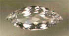 Бесцветный берилл. Используют для
имитации бриллиантов и изумрудов (под камень
подкладывают серебряную или изумрудно-зеленую
фольгу), раньше из него делали оптические стекла.
Гелиодор
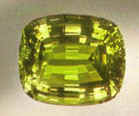 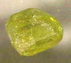
Cветлый зеленовато-желтый берилл. По-гречески "heliodor"
– дар солнца. Когда говорят о берилле, не уточняя
его цвет, то обычно имеют в виду именно гелиодор.
Приносит счастье Близнецам (знак зодиака) в
сердечных делах. Еще его носят как талисман,
оберегающий жизнь владельца в дальних поездках.
Это камень отдыха и развлечений, он помогает
человеку найти свои лучшие качества и красиво
преподнести их окружающим. У владельца гелиодора
большое число поклонников, но камень не дает ему
«потерять голову». Долго носить гелиодор не
следует.
Вероятно, эльфийские бериллы Толкиена были
именно гелиодорами.
Морганит
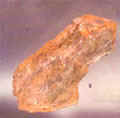 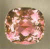
Oт нежно-розового до фиолетового цвета.
© В. Шуман "Мир камня. Драгоценные и
поделочные камни".
© Н. В. Белов "Все о камнях и амулетах"
Критика